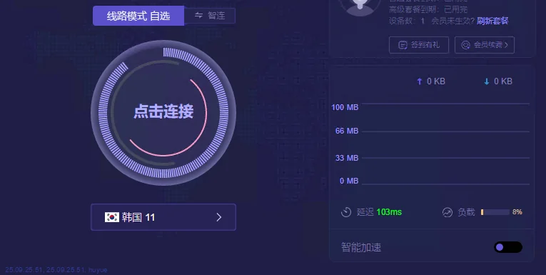
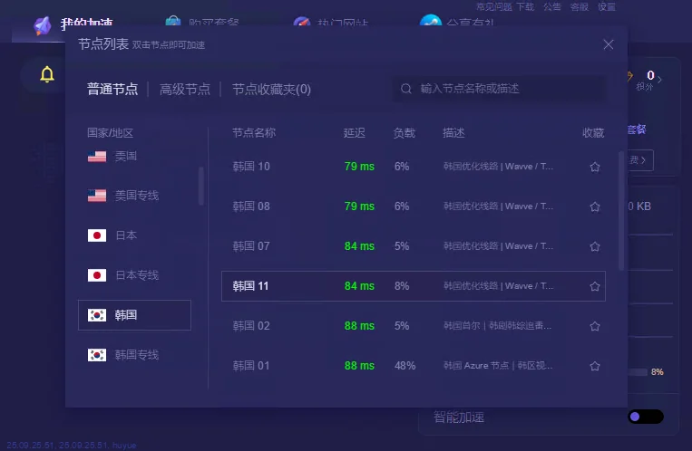

安装好了，第一次怎么连
先弄清智能/定制模式和连接成功标志。
第一次使用 →Windows 下载
从官网获取当前 Windows 客户端。安装失败和“安装成功但连不上”是两类问题，先分清再处理。
先打开 优途加速器官网，从官网的客户端下载区域选择Windows。如果没有找到对应下载项，可查看 官方帮助 ，或联系官方客服。请勿下载来源不明的安装包。
下载 Windows 客户端前，确认官网页面所列的系统版本和安装文件名；不要运行来源不明的打包程序。
下载Windows客户端前，请核对官网展示的系统要求、应用或文件名称。安装成功后，按下方步骤完成首次连接。若已经能打开客户端却无法联网，应优先检查连接设置，而不是重复下载安装。

主界面点击当前节点即可打开列表。普通节点、高级节点和收藏夹分开显示；列表的延迟为当前测试值，并不是固定速度保证。优先选符合使用需求的地区，再在同地区内比较延迟、负载和实际连接效果。

先弄清智能/定制模式和连接成功标志。
第一次使用 →从症状、网络对照、其他网络软件和驱动开始排查。
Windows 连接排查 →